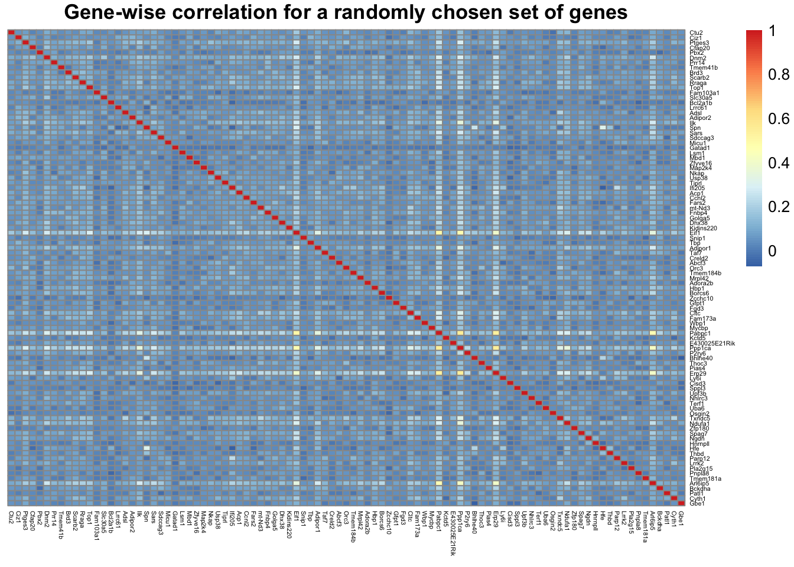

Application of poisson mash and mash to simulated single cell data (Ly6C- monocytes) under the null
Yusha Liu
2020-9-16
Last updated: 2020-09-16
Checks: 7 0
Knit directory: poisson_mash/
This reproducible R Markdown analysis was created with workflowr (version 1.6.2). The Checks tab describes the reproducibility checks that were applied when the results were created. The Past versions tab lists the development history.
Great! Since the R Markdown file has been committed to the Git repository, you know the exact version of the code that produced these results.
Great job! The global environment was empty. Objects defined in the global environment can affect the analysis in your R Markdown file in unknown ways. For reproduciblity it’s best to always run the code in an empty environment.
The command set.seed(20200618) was run prior to running the code in the R Markdown file. Setting a seed ensures that any results that rely on randomness, e.g. subsampling or permutations, are reproducible.
Great job! Recording the operating system, R version, and package versions is critical for reproducibility.
Nice! There were no cached chunks for this analysis, so you can be confident that you successfully produced the results during this run.
Great job! Using relative paths to the files within your workflowr project makes it easier to run your code on other machines.
Great! You are using Git for version control. Tracking code development and connecting the code version to the results is critical for reproducibility.
The results in this page were generated with repository version 7cf873e. See the Past versions tab to see a history of the changes made to the R Markdown and HTML files.
Note that you need to be careful to ensure that all relevant files for the analysis have been committed to Git prior to generating the results (you can use wflow_publish or wflow_git_commit). workflowr only checks the R Markdown file, but you know if there are other scripts or data files that it depends on. Below is the status of the Git repository when the results were generated:
Ignored files:
Ignored: .DS_Store
Ignored: .Rhistory
Ignored: code/.DS_Store
Ignored: output/.DS_Store
Untracked files:
Untracked: code/code_random_effects.R
Untracked: code/examples.R
Untracked: code/examples_updated.R
Untracked: code/util6.R
Untracked: code/util8.R
Untracked: code/util_ed.R
Untracked: code/util_random_effects.R
Untracked: code/util_random_effects_v2.R
Untracked: data/data_jr.RData
Untracked: output/B_cells/
Untracked: output/Ctrl2/
Untracked: output/IL12p70/
Untracked: output/Ly6C-/
Untracked: output/ed_all_trts_maxiter1500.Rds
Untracked: output/ed_second_batch_maxiter1500.Rds
Untracked: output/ed_second_batch_v2_maxiter2000.Rds
Untracked: output/ed_v1_maxiter1000.Rds
Untracked: output/ed_v2_maxiter1000.Rds
Untracked: output/examples.pdf
Untracked: output/examples/
Untracked: output/examples_mash.pdf
Untracked: output/mash_data_limma.rds
Untracked: output/mash_data_second_batch.rds
Untracked: output/mash_fit_limma.rds
Untracked: output/mash_fit_limma_all_trts.rds
Untracked: output/mash_fit_second_batch.rds
Untracked: output/non_null_sim_setting1/
Untracked: output/non_null_sim_setting2/
Untracked: output/non_null_sim_setting3/
Untracked: output/non_null_sim_setting4/
Untracked: output/null_sim/
Untracked: output/pois_mash_contrast_posterior_all_trts.Rds
Untracked: output/pois_mash_contrast_posterior_second_batch.Rds
Untracked: output/pois_mash_contrast_posterior_second_batch_v2.Rds
Untracked: output/pois_mash_fit_all_trts.Rds
Untracked: output/pois_mash_fit_second_batch.Rds
Untracked: output/pois_mash_fit_second_batch_v2.Rds
Untracked: output/poisson_mash_fit.Rds
Untracked: output/poisson_mash_fit_contrast_posterior.Rds
Untracked: output/realdata/
Untracked: output/simulations/
Note that any generated files, e.g. HTML, png, CSS, etc., are not included in this status report because it is ok for generated content to have uncommitted changes.
These are the previous versions of the repository in which changes were made to the R Markdown (analysis/sim_null_Ly6C.Rmd) and HTML (docs/sim_null_Ly6C.html) files. If you’ve configured a remote Git repository (see ?wflow_git_remote), click on the hyperlinks in the table below to view the files as they were in that past version.
| File | Version | Author | Date | Message |
|---|---|---|---|---|
| Rmd | 7cf873e | yushaliu | 2020-09-16 | Add more application and simulation results |
| html | fceb44f | yushaliu | 2020-09-16 | Build site. |
| Rmd | c80f953 | yushaliu | 2020-09-16 | Add more application and simulation results for other cell types |
Simulation procedure
We apply poisson mash and mash to single cell data simulated under the null. More specifically, we start with a subset of the single cell cytokines data from Ly6C- monocytes, which include 1) 1,879 cells from 25 conditions from the second batch, and 2) 6,794 genes that have at least 100 total counts over these 25 conditions. Then we randomly permute the cells with respect to the condition labels so that there no longer exists association between gene expression levels and conditions.
We consider three different methods to simulate null data based on the real dataset:
1). apply the same permutation to all the genes, so the correlation among genes is preserved on the permuted dataset;
2). apply independent and different permutation to each gene;
3). apply 1) followed by gene-wise addition of random effects via thinning to the randomly permuted data.
For each of the three simulation methods described above, we simulate 5 single cell datasets.
For method 1), the number of false positives are \(98, 78, 160, 92, 160\) for poisson mash, and \(2, 2, 2, 2, 4\) for fixed effects-based mash.
For method 2), the number of false positives are \(11, 12, 14, 12, 16\) for poisson mash, and \(3, 2, 4, 2, 0\) for fixed effects-based mash.
For method 3), the number of false positives are \(30, 25, 25, 100, 44\) for poisson mash, \(83, 94, 90, 98, 90\) for fixed effects-based mash, and \(7, 3, 6, 10, 7\) for mixed effects-based mash.
Exploration of false positives found by poisson mash using method 1)
library(Matrix)
library(pheatmap)
library(gridExtra)
### for one replicate, load in the raw count data at the cell level, and the poisson mash fit
data <- readRDS("output/Ly6C-/sim_null/raw_data3.Rds")
fit <- readRDS("output/Ly6C-/sim_null/ed_rep_3.Rds")
res <- readRDS("output/Ly6C-/sim_null/pois_mash_fit_rep_3.Rds")
post <- readRDS("output/Ly6C-/sim_null/pois_mash_posterior_rep_3.Rds")
### look at the posterior weights of the genes identified (false positives)
genes <- which(apply(post$lfsr, 1, min) < 0.05)
wlist <- c(1e-3, 2.5e-3, 5e-3, 1e-2, 2e-2, 4e-2, 8e-2, 0.16, 0.32, 0.64, 1, 2, 4, 8, 16, 25, 36, 50)
Ulist <- c(names(fit$Ulist), paste0("e_", 1:25), names(fit$ulist))
zeta.max <- rep(NA, length(genes))
for(j in 1:length(genes)){
zeta <- matrix(res$Ez[genes[j],], ncol=length(wlist), byrow = TRUE)
zeta.max[j] <- Ulist[which.max(rowSums(zeta))]
}
table(zeta.max)zeta.max
Emp_cov PC_1 PC_2 PC_3 PC_4 PC_5 tPCA
1 16 12 2 29 5 95 ### identified genes for which the data-driven tPCA has the largest weight
gene.list <- genes[zeta.max=="tPCA"]
### for this subset of genes, compute the gene-wise correlation across all cells
data.sub <- as.matrix(data[gene.list,])
corr.sub <- cor(t(data.sub))
pheatmap(corr.sub, cluster_rows=FALSE, cluster_cols=FALSE, fontsize_row=4, fontsize_col=4, main="Gene-wise correlation for the identified genes \n (largest weight: tPCA)")
| Version | Author | Date |
|---|---|---|
| fceb44f | yushaliu | 2020-09-16 |
### for a randomly chosen subset of genes of the same size, compute the gene-wise correlation across all cells
set.seed(100)
data.tmp <- as.matrix(data[sample(1:nrow(data), length(gene.list), replace=FALSE),])
corr.tmp <- cor(t(as.matrix(data.tmp)))
pheatmap(corr.tmp, cluster_rows=FALSE, cluster_cols=FALSE, fontsize_row=4, fontsize_col=4, main="Gene-wise correlation for a randomly chosen set of genes")
| Version | Author | Date |
|---|---|---|
| fceb44f | yushaliu | 2020-09-16 |
Conclusions
For poisson mash, the number of false positives is greatly reduced if we apply method 2) rather than method 1). The explorations above suggest that the false positives found by poisson mash when using method 1) could be attributed to the strong gene-wise correlation present in the original data, which are preserved on the permuted dataset.
When random effects are not present, the number of false positives found by fixed effects-based mash is always smaller than that of poisson mash. Since the number of false positives is already negligibly small for fixed effects-based mash, we do not consider mixed effects-based mash in this setting.
When random effects are present, the number of false positives found by fixed effects-based mash tends to be larger than that of poisson mash. Mixed effects-based mash always finds the smallest number of false positives.
sessionInfo()R version 3.6.2 (2019-12-12)
Platform: x86_64-apple-darwin15.6.0 (64-bit)
Running under: macOS Catalina 10.15.6
Matrix products: default
BLAS: /Library/Frameworks/R.framework/Versions/3.6/Resources/lib/libRblas.0.dylib
LAPACK: /Library/Frameworks/R.framework/Versions/3.6/Resources/lib/libRlapack.dylib
locale:
[1] en_US.UTF-8/en_US.UTF-8/en_US.UTF-8/C/en_US.UTF-8/en_US.UTF-8
attached base packages:
[1] stats graphics grDevices utils datasets methods base
other attached packages:
[1] gridExtra_2.3 pheatmap_1.0.12 Matrix_1.2-18 workflowr_1.6.2
loaded via a namespace (and not attached):
[1] Rcpp_1.0.4.6 knitr_1.28 whisker_0.4 magrittr_1.5
[5] munsell_0.5.0 colorspace_1.4-1 lattice_0.20-41 R6_2.4.1
[9] rlang_0.4.6 stringr_1.4.0 tools_3.6.2 grid_3.6.2
[13] gtable_0.3.0 xfun_0.13 git2r_0.27.1 htmltools_0.4.0
[17] yaml_2.2.1 digest_0.6.25 rprojroot_1.3-2 lifecycle_0.2.0
[21] RColorBrewer_1.1-2 later_1.0.0 promises_1.1.0 fs_1.4.1
[25] glue_1.4.1 evaluate_0.14 rmarkdown_2.1 stringi_1.4.6
[29] compiler_3.6.2 scales_1.1.1 backports_1.1.7 httpuv_1.5.2